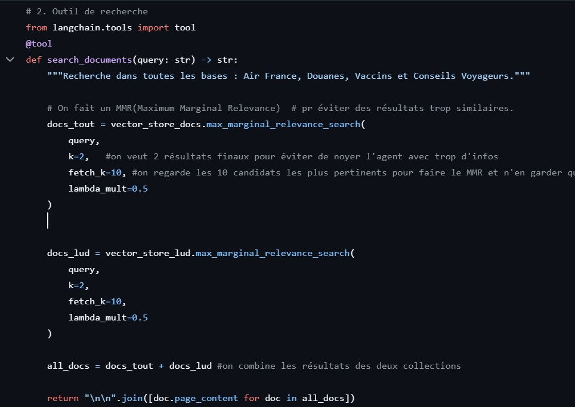
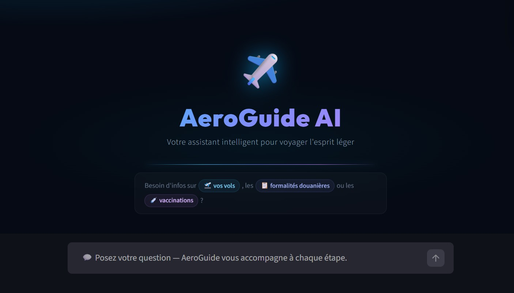

AeroGuide : Votre assistance voyage intelligent
Description brève
J'ai développé un agent IA spécialisé dans l'accompagnement des voyageurs pour centraliser des informations souvent dispersées et contradictoires. L'application répond précisément aux questions sur les visas, la douane, la sécurité aérienne et la santé.
Stack technique
Objectifs
Garantir une fiabilité maximale des informations voyage en s'appuyant sur des sources officielles pour supprimer le stress lié aux préparatifs administratifs et logistiques.
Impact et Résultats obtenus
Scraping de sources officielles
J'ai automatisé la récupération de données fiables depuis Diplomatie.gouv, Douane.gouv, Air France et Elsan Care via Crawl4AI pour garantir des réponses certifiées.
Architecture RAG complète
Traitement des données : J'ai découpé les textes en chunks et les ai vectorisés pour conserver leur sens sémantique.
Stockage intelligent : Utilisation de Vector Stores pour organiser les données et permettre des recherches par similarité ultra-rapides.
Agent IA contextuel
Mémoire persistante : L'agent se souvient de la destination et de la compagnie aérienne de l'utilisateur pour affiner ses conseils au fil de la discussion.
Réflexion logique : Le système est capable de croiser les informations entre santé, bagages et visas pour offrir une vision globale du voyage.

Disponibilité 0/7
Mise en place d'un expert toujours accessible pour lever les doutes instantanément avant ou pendant le voyage.

Schéma de l'architecture RAG
Ce schéma présente le flux complet du projet, de la collecte de données officielles jusqu'à la génération d'une réponse fiable pour le voyageur.